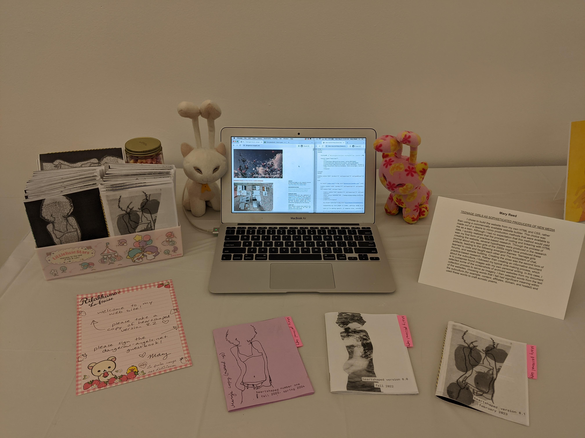 here's my work on display at my presentation last week! please sign my guestbook if you haven't already ^__^ 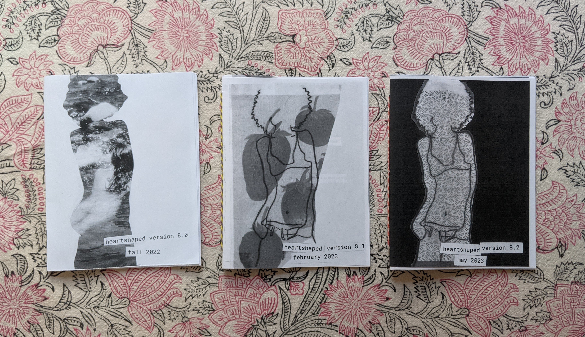 and here is the finished series of zines. i still have a handful of copies left, feel free to email me if you would like one! i've been thinking about the lifespan of this website (specifically, its location here at dangerous-angels.net). originally i thought i might renew the domain name once it expired, but i've been thinking more about "net art" in general and i think part of what i like about these works is their temporal nature. interestingly, since this is a static website, it will continue to live on my hard drive in almost the same form as it currently does on the internet; but accessing this work through the internet is a crucial part of its nature, so accessing the website on my hard drive can be seen as a perversion of the work. posted by mary @ 04:07 PM est
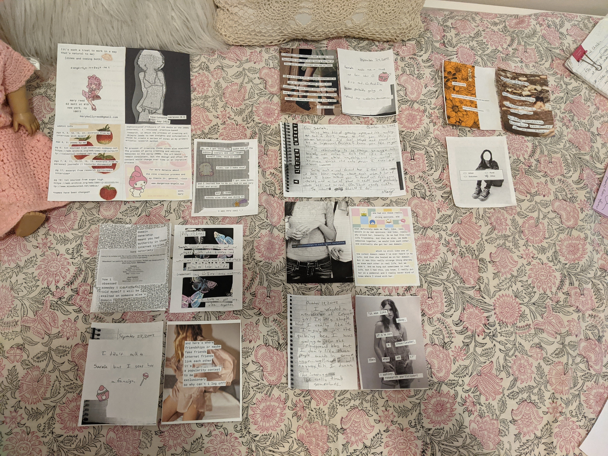 putting my zine pages in order, getting ready to make photocopies this weekend before my presentation on monday ! a q i'm asking myself: if someone else, outside of this subculture, had access to my documents, journals, and artwork, what conclusions would they have come to in response to my research question? autoethnography is such a specific place to approach research from. 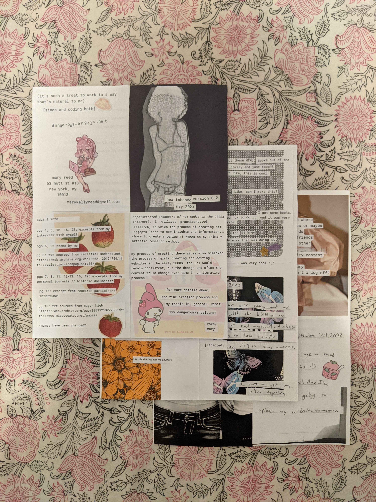 posted by mary @ 08:30 PM est
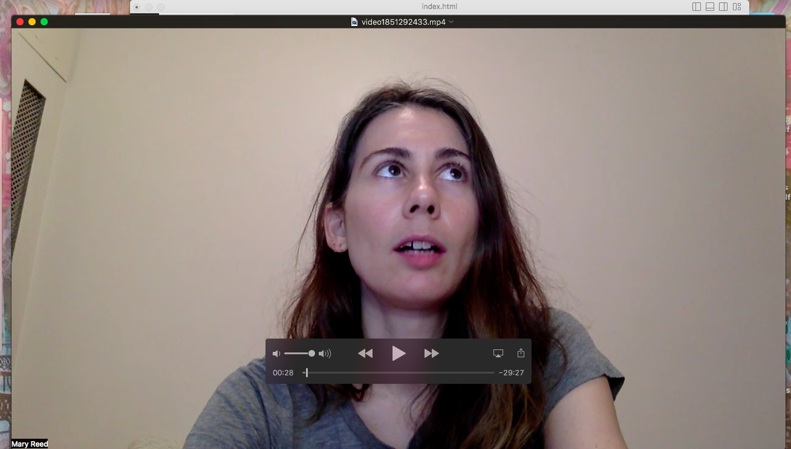 i'm in the final stages of writing + editing my paper! my artistic research project (the zine heartshaped version 8.2) has a little ways to go - tonight i interviewed myself, asking the same questions i asked my research participants. some thoughts on that- ♡ i am endlessly fascinated that all of my research participants were involved in subtley different parts of the teen girl cyberspace than i was. no one else has mentioned laundromatic, meeting postal mail penpals, or craft/sewing-focused group livejournals, which are all things that i deeply associate with the internet of my teen girl years. ♡ i maybe should have done this interview earlier in my process? i definitely think some of my responses to the questions were swayed by the research i've done, and, for example, having my high school opinions fresh in my head from reading my journals, rather than trying to recall them from memory. (spoiler alert: they're different!) ♡ guys. i'm way more of a nerd than i thought i was. throughout this semester it has been dawning on me that although i don't think of myself as a tech person, i'm definitely more tech savvy than the average human, and still have a deep affinity for the trial and error process of coding. in case you needed more proof, here's a game i had way too much fun (& stayed up way too late) coding last night: to play: click the cheesy puffs whenever they touch the yellow stars. careful not to click when the cheesy puffs are touching any of the other colors! posted by mary @ 09:22 PM est
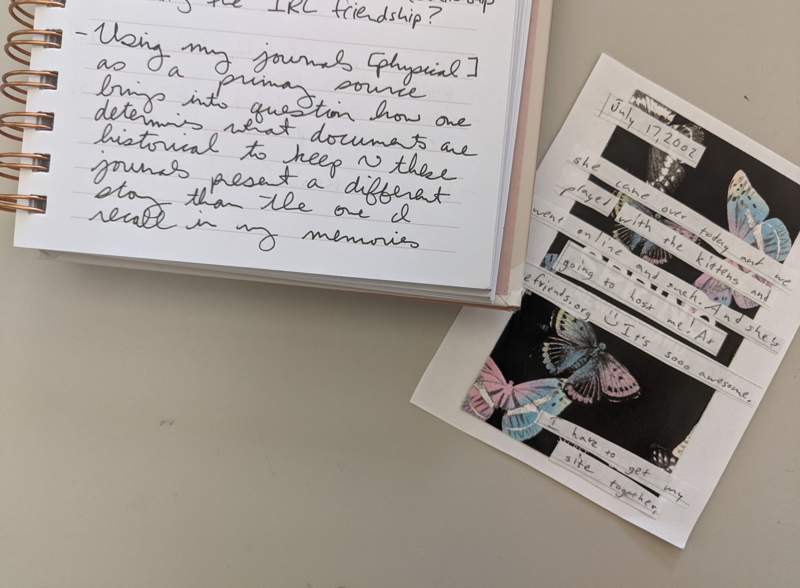 using my journals [physical] as a primary source brings into question how one determines what documents are historical to keep ~ these journals present a different story than the one i recall in my memories posted by mary @ 06:17 PM est
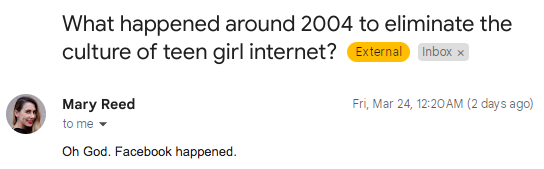 a late-night email to myself with a sudden realization. earlier in this research journal i reflected on why this subculture of creating personal websites seemed to peak around 2002/2003. i hypothesized that it was because that was the time period i was most involved with the subculture,so it would logically follow that the websites i remembered were from that time period. i started undergrad in fall 2004, and as a result i spent much less time participating in personal website creation after that (both because i was busier and also because i'd found like-minded people in real life). facebook may not be the whole story, but the creation of facebook in 2004 signalled a shift in the way people used the internet: it was the beginnings of web 2.0 and people creating content for centralized platforms with built-in tools for interconnectedness, rather than creating content that had to be linked together one piece at a time by humans. posted by mary @ 02:16 PM est
a few things on my mind today: being a person on the internet in 2023 i am studying to be a teacher (k-12 art educator) and i've been reflecting a lot on how i should or shouldn't post publicy on the internet. i have in the past posted some quite personal things, and i need to evaluate what is appropriate to make public in the future. it's interesting in the way it intersects with my identity as an artist. this is something i'll be exploring in more depth and including in my paper.new theme in my research: mean girls the poems that i wrote for my zine brought up a lot of complex feelings about the nature of my friendships in this subculture. specifically, i often felt unsure of myself and whether i "belonged." i found some validation of these feelings in rachel simone weill's pfft project, where she reflected on the language of "elitism and tech snobbery" characteristic of many of the sites in the subculture.my teen self i was compiling data from my document collection (archived websites from this time period); a few of my websites from this time are included. from the way i described myself and my website, it sounds like i really hated myself. i do know that i was often unsure of myself at the time and trying to figure out how to portray myself. in my preliminary research, i came across a lot about ernest goffman's theory of performance of self. what are some reasons one would perform hating themself? was this how i truly felt about myself, or was i performing some sort of subordinance to the "cool" girls who inhabited the subculture?posted by mary @ 06:55 PM est
two interesting projects that i discovered in the comments section of the tiktok i linked in my previous entry: neocities - a play off of geocities, one of the earliest free website builders. they offer free web space and an in-browser html editor, and you can also browse all the sites through tags ("our version of web rings"). i quickly discovered cinni.net, which is steeped in nostalgia for early 2000s websites - the layout and content is a mix of what i would consider both "good" and "bad" design from that era. and THEN i followed a link from cinni to melonland forum, which has a layout reminiscent of the forums i frequented in high school, and seems to be dedicated to a "web revival" of this time period of the internet! spacehey.com - a myspace-inspired "retro social network," created by a 20-year-old (again, someone who would have been a child during myspace's heyday). so many thoughts! part of me wants to dive right in and start making accounts and cute little pixel layouts. the nostalgia for this part of my adolescence is so tender. but i have to ask myself, what am i seeking? i think there's a similar desire for a shared connection like i craved in high school. feeling isolated with few friends in nyc while i plow through my masters program. however, exploring this world has reminded me how often i still felt unpopular/unwanted/unsure of myself on my teen girl internet. i often felt like it was a cool girls club that i wasn't *quite* a part of. will that have changed? i'm also simply delighted to find so many people devoted to preserving the web of that time, and intent on taking the internet back into their own hands, away from the large social media corporations and platforms most people interact with for the majority of their internet usage today. i knew the work i was doing was zeitgeisty, but i had no idea how much (and i'm startled to just now uncover this stuff 3/4 of the way into my thesis! i think this speaks to how disconnected i am from "internet culture" at this point in my life). it's also really fascinating to see that many of the people involved in this revival were not old enough to participate in the original culture. this speaks to something larger than nostalgia at play. what is it? posted by mary @ 12:46 AM est
it's been a busy week, and i have much to reflect on! notes on ethics, cont. I shared my thesis zine with my classmates and professors, and cathy reminded me that when using someone else's work, credit should be given! This was a humbling moment for me and brings up a major theme of my project: I have suggested in the draft of my paper that contributions of teen girls have been overlooked or ignored. chilling to realize that my own work could be seen to contribute to this/being complicit. I'll rectify this for the next iteration (8.2); in the meantime, I've linked to the archived websites featured in 8.1 below. (this is actually an interesting way to present the information anyway. maybe i could do something with QR codes in the next zine?) 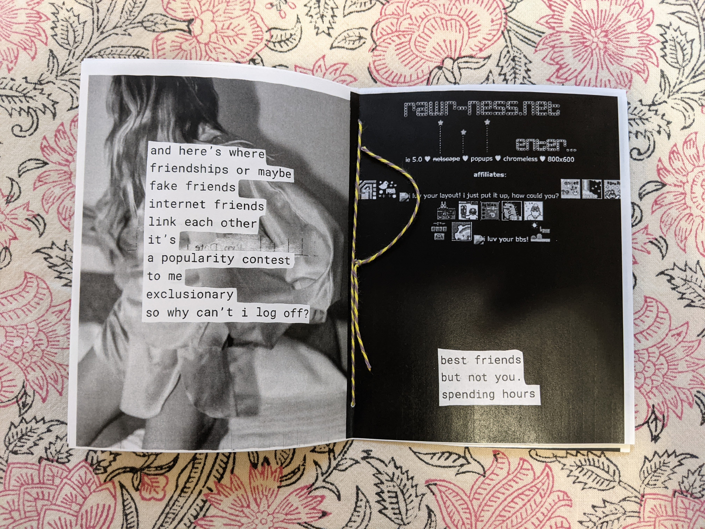
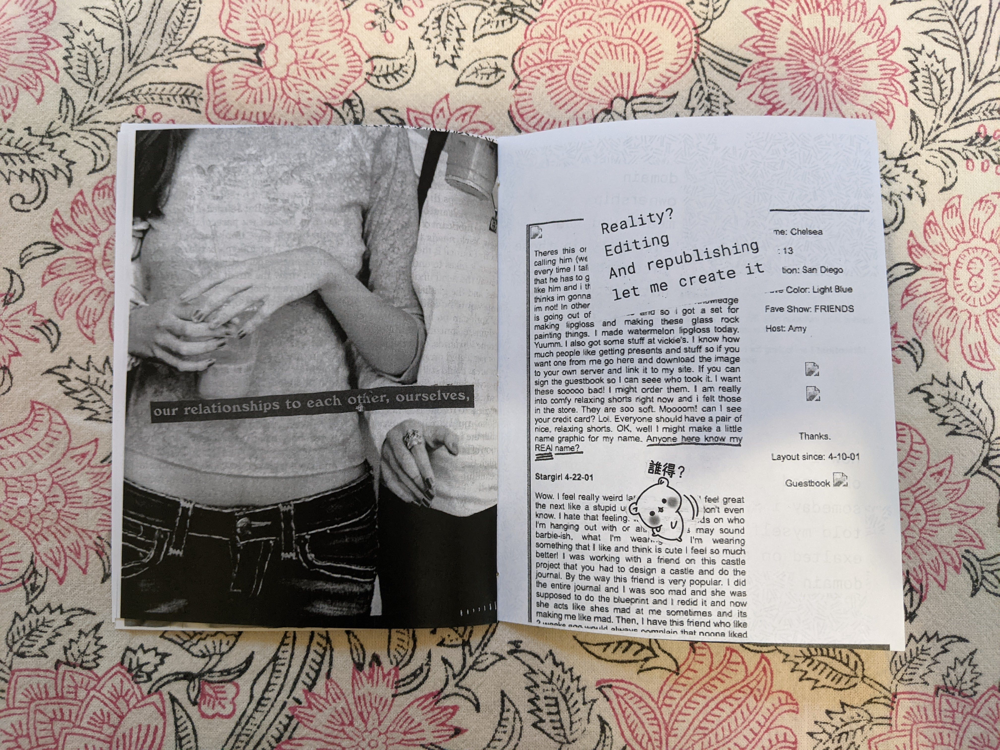
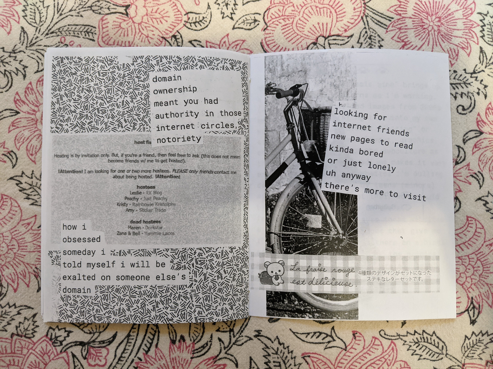
"everyone needs to learn basic html/css coding so we can go back to having our own home pages again"
annabella alerted me to this tiktok, which was made by a 21-year-old (who would have been an infant during my personal heyday of making websites). i must know more. pfft: pixel friends for trade I conducted my first interview today (my first research on a human subject!!) and she passed along this truly incredible art (research?) project.
I have to run to class now, so I'll peruse it more later, but in the meantime it's going into my own "www" section :) posted by mary @ 05:07 PM est
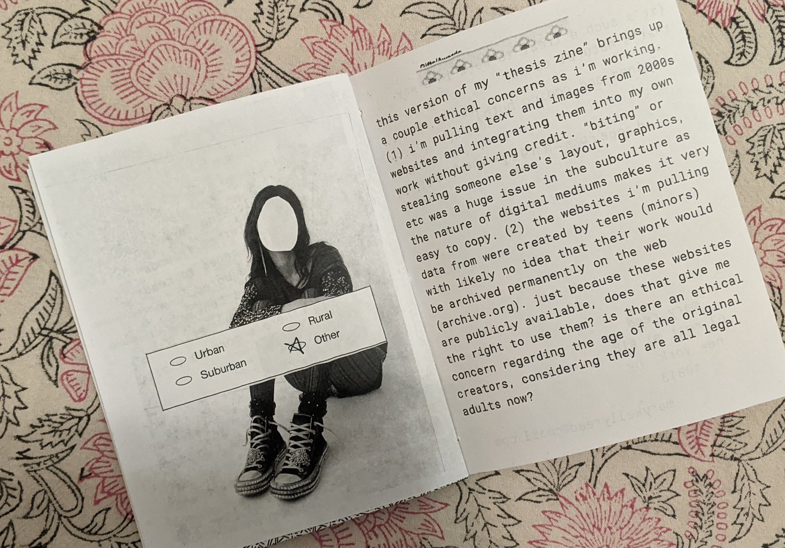 a question that came up as i was creating the second version of the zine: is it ethical to access, distribute, and appropriate websites created by minors? In research, it's considered ethical to use publicly available information. Malin Sveningsson Elm defines a public environment on the internet as "one that is open and available for everyone, that anyone with an internet connection can access, and that does not require any form of membership or registration" (p. 75) (Internet Inquiry : Conversations about Method, edited by Annette Markham, and Nancy K. Baym, SAGE Publications, Incorporated, 2008. ProQuest Ebook Central, http://ebookcentral.proquest.com/lib/sva-ebooks/detail.action?docID=997217). She then adds, "even if users are aware of being observed by others, they do not consider the possibility that their actions and interactions may be documented and analyzed in detail at a later occasion by a researcher. If the content was created for one certain audience and context, the transmission of this content to other contexts may upset the creator" (p. 77). posted by mary @ 08:22 PM est
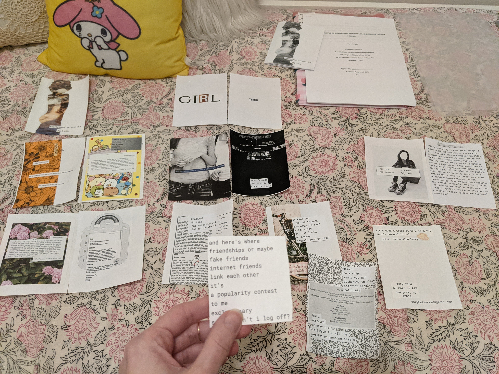 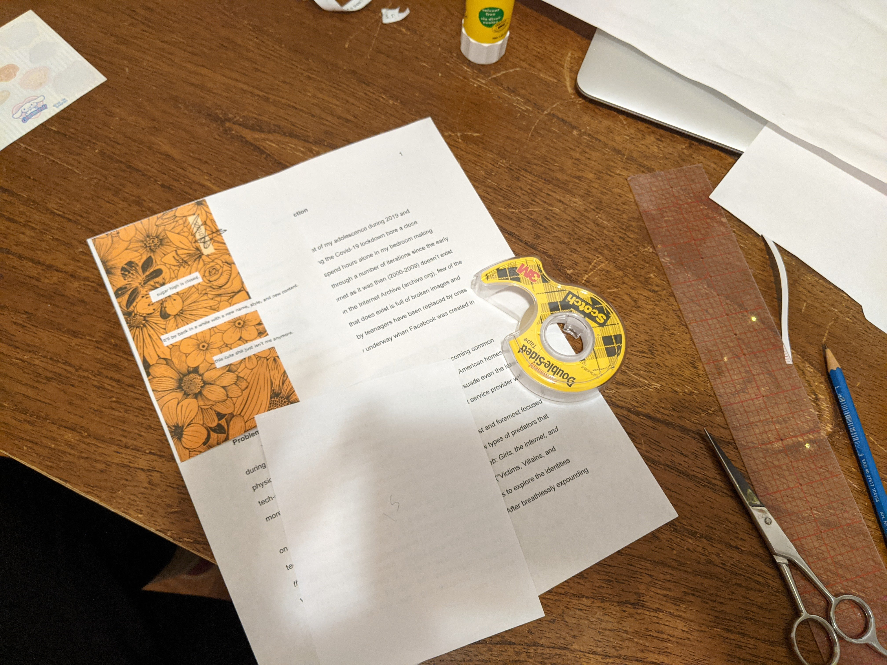 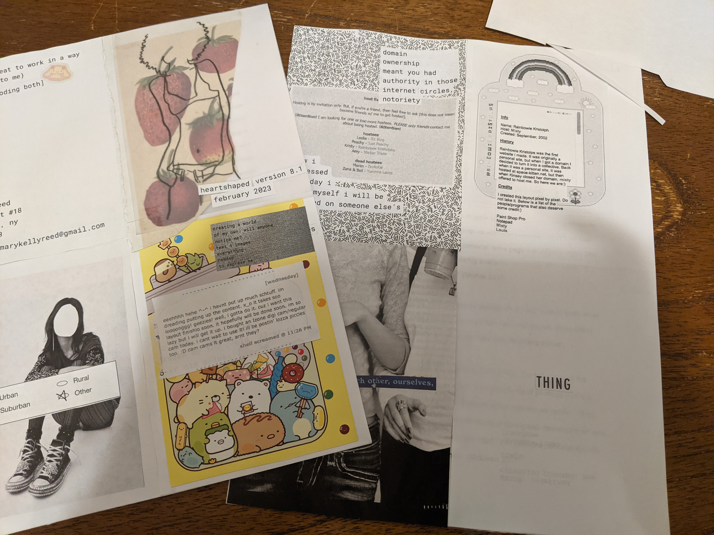 putting the final touches on version 8.1 of the zine. some notes about my process:
posted by mary @ 09:54 PM est
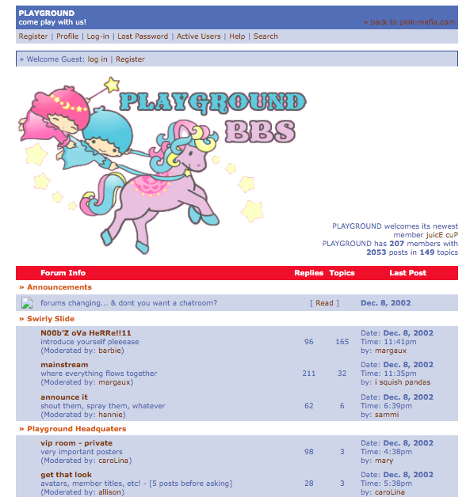 I haven't dug too much into the culture of BBS that facilitated a lot of the community amongst website builders. I was a member of this one in 2002, when I was 16 years old. The domain (pink-mafia.com) that hosted this one, playground BBS, was owned by a friend of a friend. as I recall they all pretty much looked like this, I believe there were a couple of different services that would provide plug n play CGI that girls would then install on their domains. (for example this one links to ikonboard.com) one interesting thing is the name: we all called these BBSs, an acronym for "bulletin board system," but this acronym actually refers to a much earlier technology that dates back to the 70s. I'm not sure how it carried over to be the name of choice for forums populated by teen girls troubleshooting each other's HTML problems. 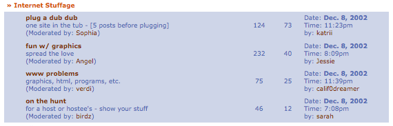 I mentioned this in my paper, but something I want to continue to explore further is this culture of girls learning how to code from each other. This starts with Lissa Explains and I've also found some examples of girls crediting their friends with layout help on archived websites. 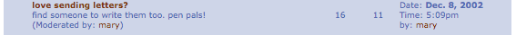 also: of course I moderated the pen pal board. posted by mary @ 02:13 PM est
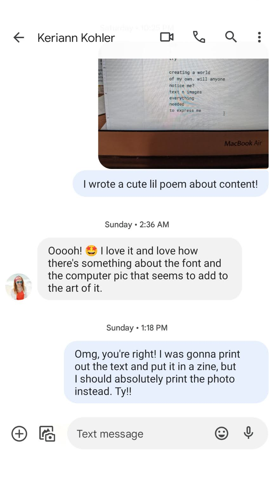 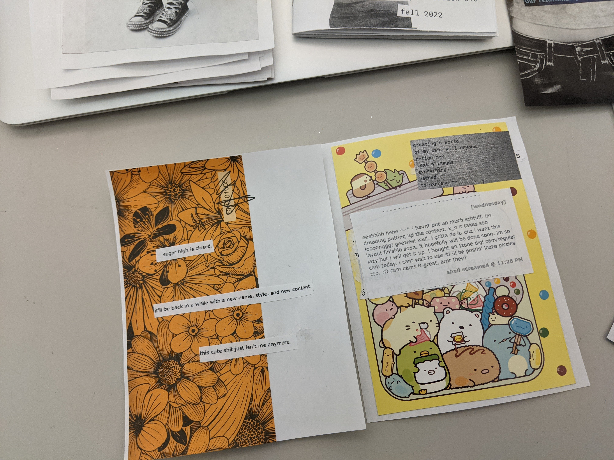 zine creation process. posted by mary @ 06:01 PM est
i just found a new source, the web design museum. i'm perusing the web design history timeline right now and it's striking how practically all of the named inventors & founders of the early web were men. I was actually searching for a picture of a broken image icon / has the broken image icon always looked the same? posted by mary @ 10:57 PM est
i'm working on my arts research this evening and putting together some zine pages. i went through the pages that i made back in the fall (when cathy asked us to "make something" for homework) and pulled out the ones that still seemed relevant, but then i realized, since this process is supposed to be iterative, why not remix the other pages i made before? 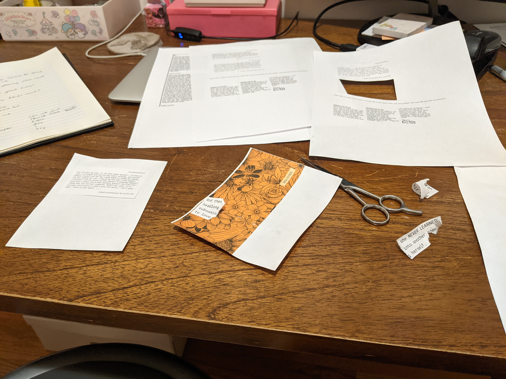 what i'm doing right now is taking text from some of the archived websites i found, and cut n pasting it into my own zine pages. the ethics of this is super interesting because stealing other peoples' graphics, layouts, or content was a huge deal at this time (it might be interesting to reflect on how that's changed, or not, with platforms like tiktok that are designed for remixing and iterating on other peoples' work). something else that is fascinating me is the use of the word "content" to describe what we put on our sites, because that's such a jargon-y word and we were using it as 14-year-olds in 2000. now the word is commonplace, but i think of it as a social media concept. i'm also curious about the origin of the term "splash page," which everyone in the subculture used. {it is really cool to experience the effects of arts research. creating the work enables a flow state which naturally prompts meditation on the topic at hand and leads to new topics of curiosity..} posted by mary @ 09:31 PM est
Today I was having a conversation with a high school student at my student teaching placement, I mentioned that I'm working on a thesis as part of my grad school work and she asked what it's about. I felt sort of weird explaining that it was about teen girls learning to code, so I just said that it's about making personal websites in the early 2000s (which is also true). She had also asked what artistic mediums I work in, which is such a fantastic question, and I talked about how I've been building this website as part of my artistic practice and she questioned how making a website is artistic (not in a negative way, genuinely curious). It's a really cool question to ponder especially in terms of what the web looks like today. Based on her age it can be assumed that she primarily interacts with web 2.0 (socially connected platforms and apps, rather than the more static websites of web 1.0). Thru my artistic research I really have come to view creating this website as an iterative artistic practice, terms that I didn't have when I was 15 but I do think I was working in a similar spirit back then. posted by mary @ 08:18 PM est
today in class we practiced our interview questions with a partner. we recorded these practice interviews to test our recording technology, but I also made some interesting personal reflections about my research topic, so I decided to post an exerpt of the video here:
{video of me talking about meeting [postal] penpals online in the early 00s} posted by mary @ 09:26 PM est
ok, very exciting!: i fixed all the broken images & links! figured out how to create subfolders for my images on github! rly proud of myself and thrilled to have this lil site truly up and running. this weekend I have been working through the online course for ethical treatment of *~* human subjects *~* since i intend to interview a few people for my thesis. this week i'd like to continue collecting examples of documents (screenshots of historical websites) and perhaps start doing some analysis of those documents. i also want to do some further collage/zine making to further the practice-based research aspect. posted by mary @ 01:44 AM est
dangerous-angels.net (that's this site!) is now officially live!! i explored several different options for hosting, and surprisingly found github pages to be an easy and straightforward (and FREE) solution. my big struggle with hosting platforms in web 2.0 is that they have too much functionality and nowhere to plop down a simple little page of HTML. scanning a list of hosting solutions recommended by my go-to domain name provider, a ton of them sported the tagline "no coding needed!", eerliy reminicient of this "Pixelle's Picks" column from Teen Magazine, july 2000: 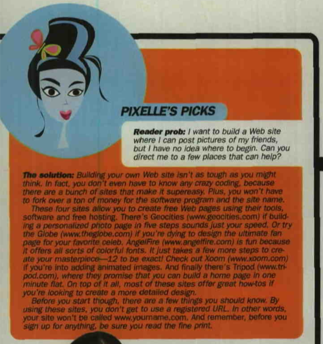 it may seem benign - we'll make it easy for you! - but the effect is to leave us helpless consumers, unable to build anything for ourselves (teen girls and grad students alike). i'm excited to dig into a lot of ideas i have about the ability to code as a form of currency. and i'm thrilled to have found a hosting solution that's so simple. i write the code in a simple text editor on my local hard drive, then upload it to my github repository. i've never used github before tonight, and tbh it makes me feel like a master coding genius, even though i don't understand half of the terminology and i'm just clicking around and trying stuff out like i'm 12 again. but hey, i got a website live in under an hour! speaking of which, still some broken links and broken images bc i'm trying to figure out how to replicate my folder hierarchy in github. hang in there with me! posted by mary @ 12:46 AM est
something interesting that i'm noticing as i continue to organize my "document collection": most of the sites i've gathered so far are from 2001-2002. {for context, i was age 14-16 during this time period.} was this the heyday of the subculture? is this simply because the sites themselves had a short lifespan, so all the other sites they link to also existed during the same contemporary time? or did i simply save sites that i personally remembered when i was doing my initial document search? posted by mary @ 06:10 PM est
finally getting into organizing the document collection stuff tonight. created a page with a very basic iframe layout (subject to change, like all layouts!) and it's so enjoyable to go through the coding process. the dopamine hit when you refresh the page and get exactly what you were hoping for !! posted by mary @ 01:07 AM est
some observations as i flail around coding today:
posted by mary @ 06:40 PM est
testing 1 2 3 :P today I started thinking about how I want to organize the document collection; actually today I feel like I’m doing a million things at once. I made a collage/journal entry reflecting on some ideas I had at the "salem witch trials” exhibit that I saw with melissa yesterday. I need to start organizing the document collection (right now it’s a mess in my bookmarks and a bunch of screenshots) but to do that I needed a repository, so I had to make the website, which is this obviously - but I have to design it first, which means coding html for the first time in years. [obviously I don’t have to make a website from scratch, but for this inquiry, I prefer to] [also full disclosure, it hasn’t been that long since I coded html – I had a pretty serious neopets re-obsession from 2020-2021, basically until flash was made obsolete] 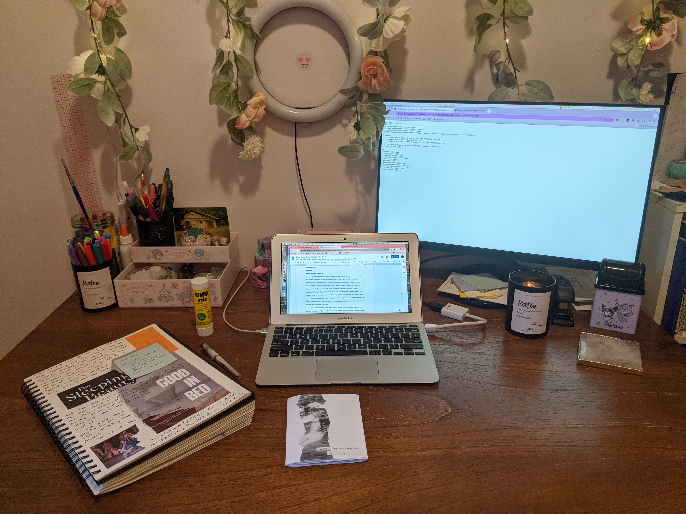 that’s my current desk setup btw. viewing page sources just like in the old days! posted by mary @ 05:01 PM est |
ABOUT |